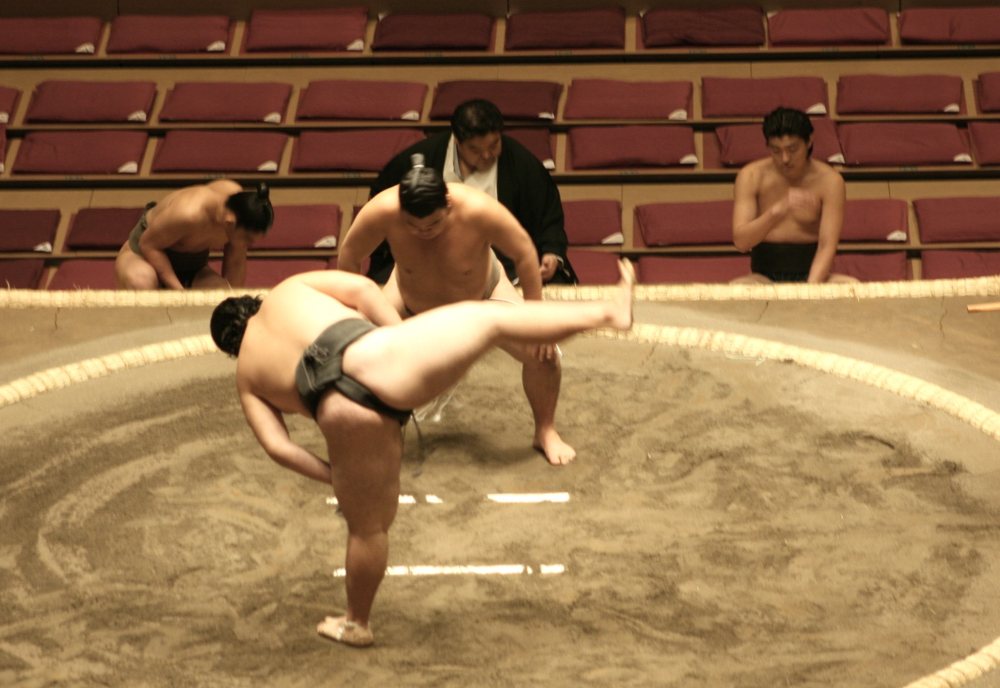

Historians agree that the origins of sumo date back 2000 years; however, it never really flourished as a spectator sport until the early 1600’s. Like any other social group in Japan, there are strict rules and traditions that are observed throughout the sport. The beginner watching his first sumo broadcast on television soon realizes that very little time is actually spent grappling. Rather, the rikishi spend most of their time performing pre-bout ceremonies steeped in Shinto tradition.
Shinto is the native religion of Japan and is more a set of rituals and ceremonies than a system of beliefs or a definite code of ethics. The word itself means “way of the gods.” Sumo was originally performed to entertain the gods (kami) during festivals (matsuri). Sumo as part of Shinto ritual dates as far back as the Tumulus period (250-552), but it wasn’t until the 17th century that it began adopting the intense purification rituals that we see in sumo today.
Most of the Shinto that we see in sumo occurs symbolically. To begin with, the sand that covers the clay of the dohyo is itself a symbol of purity in the Shinto religion. And the canopy above the ring (yakata) is made in the style of the roof of a Shinto shrine. The four tassels on each corner of the canopy represent the four seasons, the white one as autumn, black as winter, green as spring and red as summer. The purple bunting around the roof symbolizes the drifting of the clouds and the rotation of the seasons. The referee (gyoji) resembles a Shinto priest in his traditional robe. And kelp, cuttlefish, and chestnuts are placed in the ring along with prayers for safety.
Each day of the tournament (basho), a ring entering ceremony is held, wherein each wrestler’s body and spirit undergoes purification. Yokozuna are dressed in mawashi with five white zigzag folded strips of paper on the front, the same as those found at the entrance of Shinto shrines. On the front of all mawashi are sagari, which are fringes of twisted string tucked into the belt, and they represent the sacred ropes in front of shrines. Numbers of strings are odd, between seventeen and twenty-one, which are lucky numbers in the Shinto tradition. And of course, the salt that is tossed before each bout is an agent for purification and one of sumo’s most visible rituals.
As a religion of customs and not laws, Shinto developed as a religion to please the gods in order to ensure a good harvest and divine protection, but soon made headway into the sport of sumo as a way to entertain those same gods, purify the sport itself and protect the rikishi from harm.
The first ceremony of the day is the dohyo-iri, or ring ceremony performed by Juryo and Makuuchi rikishi before their bouts begin. The rikishi are grouped into two groups—East and West—and each group takes a turn entering the ring. The lowest-ranked rikishi enters first and walks a complete circle around the ring followed by the other rikishi in ascending order according the rank. Before the individual rikishi enter the ring, they are introduced to the spectators. Once the last rikishi in the group has been introduced, the rikishi, who are facing the spectators, turn inward and face each other around the ring. After clapping their hands once, they raise their right hand, lift their kesho-mawashi (decorative aprons created for the ring ceremony), and finally raise both hands in unison. This tradition goes back to the samurai days and represents the rikishi showing each other that none is armed. During the Makuuchi ring ceremony, the Yokozuna are notably absent from the group as they must perform their own individual ring ceremonies. When a Yokozuna performs his ring ceremony, he will wear a white tsuna, or zuna (braided rope with five zig-zag strips hanging from the front ), around his waist to signify his rank.
Once the actual bouts begin, the two rikishi spend several minutes before their match lifting their legs high in the air and stomping them down, a practice said to scare away any demons. They also throw several handfuls of salt into the ring, which is said to purify the ring. Many rikishi will also sprinkle salt around their bodies as a means of protecting them from injury. After the last bout of the day, the yumi-tori (bow twirling) ceremony is performed by a makushita-ranked rikishi from the same stable as a Yokozuna. True fans of the sport will not leave their seats until this ritual is performed.
Presently, sumo consists of six major tournaments a year called hon-basho. The tournament months and sites are as follows: January-Tokyo, March-Osaka, May-Tokyo, July-Nagoya, September-Tokyo, and November-Fukuoka. Up through the early 20th century, there were only two basho a year; however, as sumo’s popularity grew, the number of major tournaments increased to four basho a year and then in 1958, the current six-basho-a-year format was established. Also, up until 1949 a basho only lasted for 10 days; currently a basho runs for 15 days. In between basho, the rikishi constantly keep busy by touring the outskirts of Japan giving exhibitions for fans who might otherwise not get a chance to see the sport up close and live. This touring is called jungyo, and while the rikishi do battle each other in front of the fans, they are more concerned about avoiding injury than winning. This type of exhibition sumo is called hana-sumo, or flower sumo.
Throughout the history of the sport, there is record of only 68 rikishi having been crowned as Yokozuna. Currently only #68 Asashoryu is still actively fighting. Asashoryu is the third foreign rikishi to have ever received this honor behind #66 Musashimaru and #64 Akebono, who come from Hawaii; Asashoryu is from Mongolia. Often, sumo eras are defined by the Yokozuna who fought in them. In order to receive promotion to the rank of Yokozuna nowadays, a rikishi must win two tournaments in a row. To emphasize how difficult this task is, out of the hundreds of thousands of youngsters to have ever stepped in the ring only 68 have ever reached the pinnacle. In times past when there were no active Yokozuna, exceptions to the two tournament rule were made if a rikishi won one tournament and then followed that performance up with a record “worthy” of a Yokozuna.
Another fascinating aspect of sumo are the daily practice sessions (called keiko) just prior to and during the major tournaments. Practice begins around 5:00 am for the lowest ranked rikishi and starts with stretching followed by actual practice bouts in a makeshift ring. The most common form of keiko is called moshi-ai-geiko. This form of keiko is basically winner stays in the ring until someone can beat him. As soon as one bout ends, every rikishi at the practice session is expected to rush into the ring towards the winner in hopes that he will be chosen as his next opponent. There is no formal teaching of holds or maneuvers; rather, the rikishi learn these themselves by watching their seniors and practicing endlessly. The higher-ranked a rikishi is, the later in the morning he may enter the practice ring. The Makuuchi rikishi usually arrive at the practice session at 8:30 am and bark out instructions to their inferiors as they stretch ringside. As the higher-ranked rikishi begin their practice, those of lower ranks are busy in the kitchen preparing the first meal of the day.
At around 11:00 am the rikishi sit down to this meal. The higher-ranked rikishi eat first while the others stand at attention around the table waiting to serve their superiors. The main meal of the day consists of a stew dish called chanko-nabe. The broth is derived from seaweed, and different meats, fish, vegetables, and noodles are added to create a high-calorie meal. Chanko-nabe is eaten with rice and washed down with bottles of beer. The higher-ranked rikishi eat and eat sometimes only leaving scraps for the younger rikishi to finish up. After the mid-morning meal, the rikishi lie down for afternoon naps as there are no more official duties to be taken care of at the stable.
Reference links:
http://www.sumotalk.com/history.htm